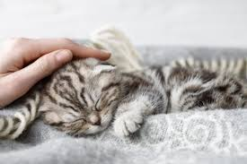
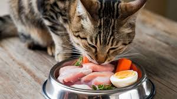
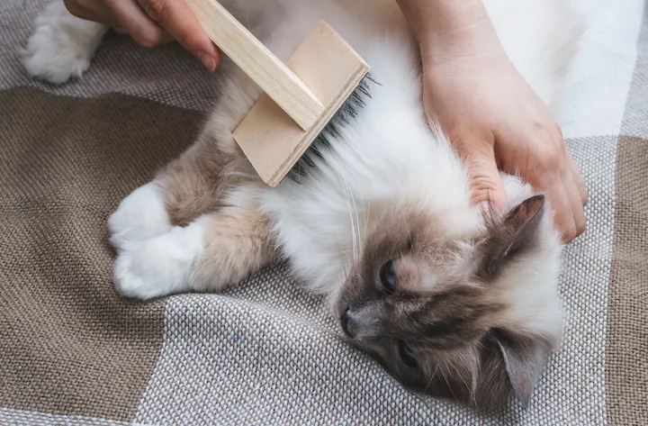

1
Antes de adoptar, asegúrate de tener un entorno seguro,
espacio suficiente y tiempo para dedicarle atención
y cariño a tu nuevo compañero.

2
Llevalo a su primera revisión para asegurar que este sano, vacunado y libre de parásitos.
Agenda sus controles regulares.
3
Elige alimentos de calidad adecuados a su edad. Evita darle sobras o comida humana
que pueda hacerla daño.

4
La limpieza de la caja de arena es fundamental, porque afecta directamente la salud y el comportamiento de tu gato.
Es recomendable realizar una limpieza y cambio completo de la arena semanalmente.

5
Los gatos son animales de rutina y prosperan con la predictibilidad. Establecer horarios fijos para la alimentación,
el juego y la hora de acostarse ayuda a reducir la ansiedad y les da una sensación de seguridad y control sobre su entorno.

6
El aseo es crucial, el cepillado regular es importante para eliminar el pelo muerto, previniendo así la formación de nudos y la ingestión excesiva de bolas de pelo. Además, cortar las uñas periódicamente
ayuda a mantener la salud de sus patas.
